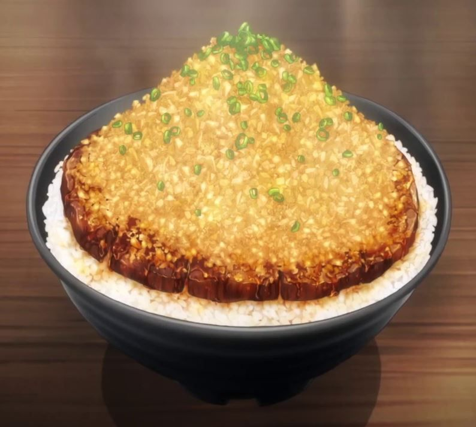

Chaliapin Steak Don
Ingrediens
- Beef Sirloin
- Lots of Onion
- Garlic
- Pepper
- Salt
- Potato Strach
- Rice
- Umeboshi Paste
- Pickled Plum
Recipe
- Chop the onions finely.
- Remove the tendons from the beef and beat it with a meat tenderizer until as flat as possible
- Cover meat on both sides with the chopped onion and leave for 30 minutes or more. Remove the onion and add salt and pepper.
- Cook the steak to your preference(most would prefer medium-rare). Remove from heat and melt 1 tablespoon of butter in a frying pan and fry the onion used for the beef until it changes color. Adjust the flavor with salt and pepper, then move the onion to the steak.
- Melt the remaining butter in the frying pan and fry the sides of the meat before taking it out.